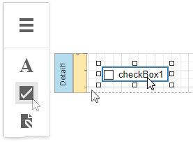
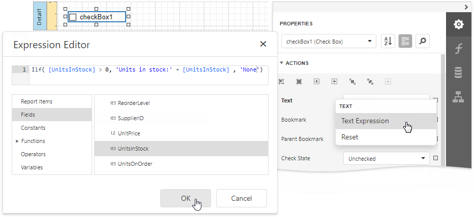
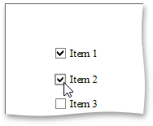
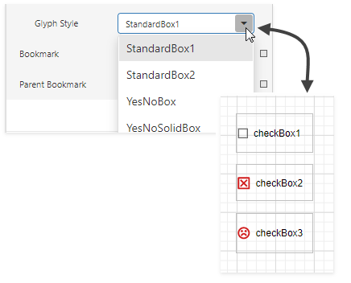

Check Box
The Check Box control displays the checkbox's state.
You can add this control by dragging the Check Box item from the Toolbox onto the report's area.

Use one of the following properties to set the checkbox's state:
Checked - indicates whether the checkbox is selected (displays a check mark) or not (is empty).
Check State - specifies one of the following checkbox states:
Icon Check State Unchecked Checked 
Indeterminate
The Text property specifies the checkbox's caption. You can double-click the checkbox to invoke its in-place editor and type the desired text.

Bind to Data
You can bind the Check State property to a data field obtained from a report's data source. Switch to the Properties panel, expand the Check Box Tasks category and click the Check State property's marker. Select Check State Expression from the popup menu. Then select a data field in the invoked Expression Editor.

The data field value determines the checkbox state in the following manner:
- True or 1 activates the Checked state;
- False or 0 activates the Unchecked state;
- Any other value activates the Indeterminate state.
In the same way, click the Text property's marker, select Text Expression, then select a data field or construct a complex binding expression that involves two or more data fields.

You can also drag and drop a Boolean type data field from the Field List to create a new checkbox bound to this field.

See the Bind Report Controls to Data topic to learn more about creating data-aware controls.
Interactivity
Set the Edit Options | Enabled option to Yes to enable changing the checkbox state in Print Preview.

The Group ID setting defines the checkbox's behavior in Print Preview:
When you set this property to an empty string value, a checkbox can be switched to either the "checked" and "unchecked" state independently on other available check boxes.

Otherwise, the field editor behaves like a radio button, and editors that have the same ID belong to a single logical group (that is, only one option can be selected in a group at a time).
Glyph Customization
The Glyph Options property provides access to glyph settings.

Alignment - specifies the glyph's alignment within the control.

Size - specifies the glyph size.
Glyph Style - specifies a predefined glyph style.

Custom Glyphs - specifies a custom glyph image for each checkbox state (Checked/Unchecked/Indeterminate).